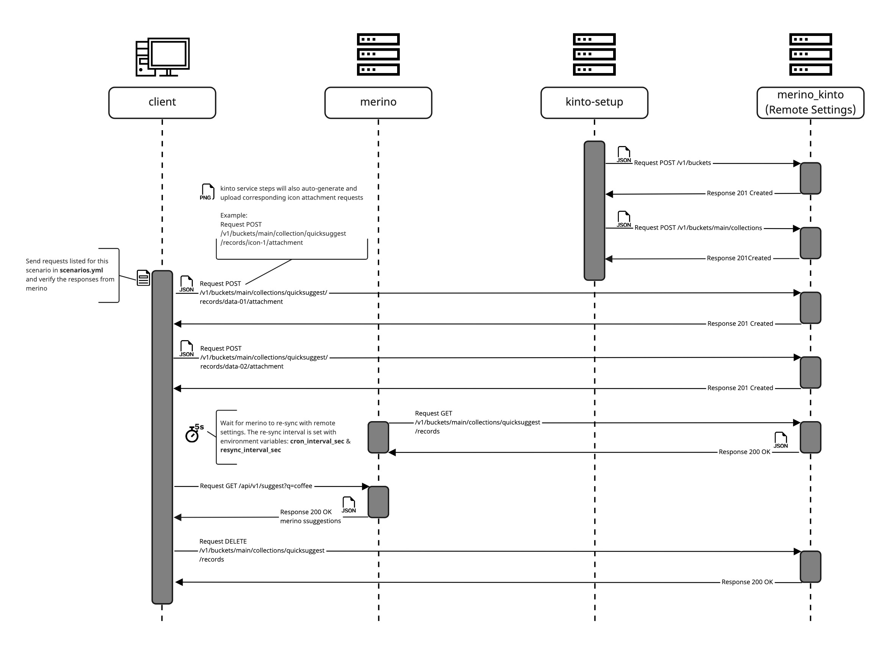

Merino Contract Tests
This documentation describes the automated contract tests for Merino.
Overview
The tests in the tests/contract directory consume Merino's APIs using more opaque techniques.
These tests run against a Docker container of the service, specify settings via environment variables,
and operate on the HTTP API layer only and as such are more concerned with external contracts and behavior.
The contract tests cannot configure the server per-test.
The contract test suite is designed to be set up as a docker-compose CI workflow.
To simulate common use cases, the suite utilizes 6 docker containers: client,
merino, kinto-setup, kinto, kinto-attachments, and redis.
The following sequence diagram depicts container interactions during the
remote_settings__coffee test scenario.
Test Scenario: remote_settings__coffee  Notes:
- The interactions between
kintoandkinto-attachmentsare not depicted. - The diagram was composed using Miro,
client
The client container consists of a Python-based test framework that executes the
contract tests. The HTTP client used in the framework can be instructed to prepare
Remote Settings data through requests to kinto and can verify Merino functionality
through requests to the Merino service.
For more details, see the client documentation.
merino
The merino container encapsulates the Merino service under test.
For more details, see the Merino documentation.
kinto-setup
The kinto-setup container consists of a Python-based program responsible for
defining the Remote Settings bucket, "main", and collection, "quicksuggest", prior
to the merino container startup, a pre-requisite.
For more details, see the kinto-setup documentation.
kinto & kinto-attachments
The kinto container holds a minimalist storage service with synchronisation and
sharing abilities. It uses the kinto-attachments container to store data locally.
For more details, see the Remote Settings documentation.
Local Execution
Local execution can be expedited by simply running make contract-tests, from the
repository root. This creates the Docker containers with kinto, Merino and the test
client and runs the test scenarios against them.
make contract-tests
To remove contract test containers and network artifacts, execute the following from the repository root:
make contract-tests-clean
Failing to run this clean command between code changes may result in your changes not being reflected.
See Makefile for details.
Maintenance
The contract test maintenance schedule cadence is once a quarter and should include updating the following:
- poetry version and python dependencies
- Docker artifacts
- client Dockerfile
- kinto-setup Dockerfile
- docker-compose.yml
- CircleCI contract test jobs
- Documentation
- client documentation
- kinto-setup documentation
- contract test documentation